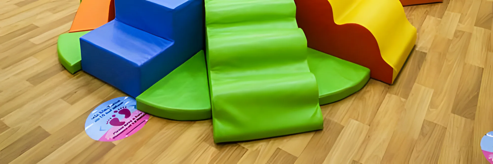
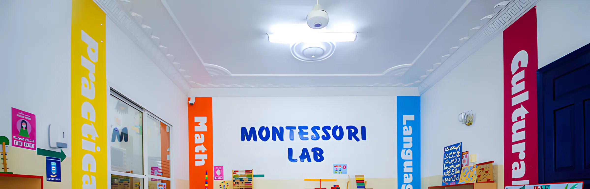

1½ – 2½سنة
الحضانة والبلاي سكول
بداية دافئة وهادئة لحياة الحضانة. أصغر الأطفال يتأقلمون عبر اللعب الحسي والأناشيد والقصص، وروتين بسيط يتعودون عليه بسرعة.
لعب حسي ولعب بالماء مهارات اجتماعية: المشاركة وانتظار الدور والتحية أول أنشطة مونتيسوري في المختبر منطقة لعب داخلية في كل طابق 
2½ – 3½سنة
ما قبل المدرسة
مونتيسوري وEYFS معاً، في مجموعات صغيرة وزوايا تعلّم مخصصة. هنا تبدأ الحروف والأصوات والأرقام، دائماً بأدوات حقيقية في أيديهم.
القراءة والحساب المبكر عمل يومي في مختبر مونتيسوري العربية والإنجليزية بالقصص والأناشيد مشاريع STEAM 
3½ – 4سنوات
التمهيدي وKG
الجسر إلى المدرسة الكبيرة: استقلالية، وقراءة مبكرة، وأرقام، وثقة بالنفس في مكان جديد. وقبل مقابلات المدارس نجري مقابلة تجريبية في الحضانة.
قراءة وكتابة مبكرة روتين منظّم مثل المدرسة مشاريع STEAM وتعلّم باللغتين مقابلات مدرسية تجريبية
7am – 2pm من عمر سنة ونصف
الرعاية النهارية
يوم كامل أو نصف يوم أو ساعات ممتدة، تناسب الأهالي العاملين. الحضور من 7:00 صباحاً، والصف من 8:30 إلى 12:00، والرعاية تستمر حتى 2:00 ظهراً مع الغداء والراحة واللعب.
كم الرسوم؟ تعتمد الرسوم على عمر الطفل وجدوله، مع خيارات دوام جزئي وكامل، وهي متقاربة في الفروع الثلاثة. اتصل أو راسل أقرب فرع لتفاصيل الرسوم الحالية.
من أي عمر تقبلون الأطفال؟ من سنة ونصف حتى 4 سنوات. برنامج ما قبل المدرسة للأعمار من 2 إلى 4.
متى يمكن أن يبدأ طفلي؟ التسجيل مفتوح طوال السنة، والدفعات الرئيسية في سبتمبر ومارس.
ما الأوراق المطلوبة؟ عادةً شهادة الميلاد، ونسخة الجواز أو الهوية الإماراتية، وسجل التطعيمات. والفرع يؤكد لك أي شيء آخر.
هل يمكن نقل طفلي لفرع آخر لاحقاً؟ نعم. الفروع الثلاثة تتبع نفس المنهج، فإذا انتقلتم داخل الشارقة ينتقل طفلك بسهولة.